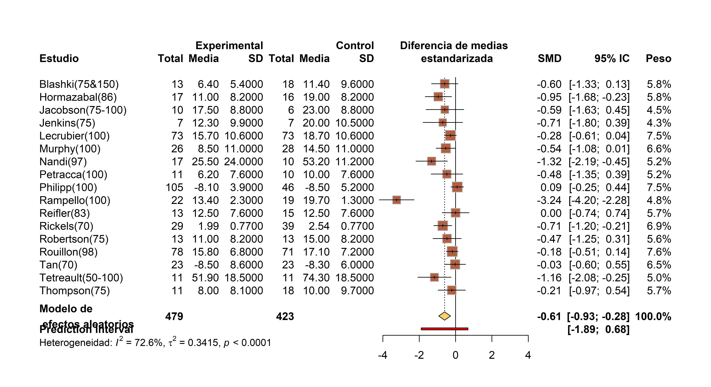
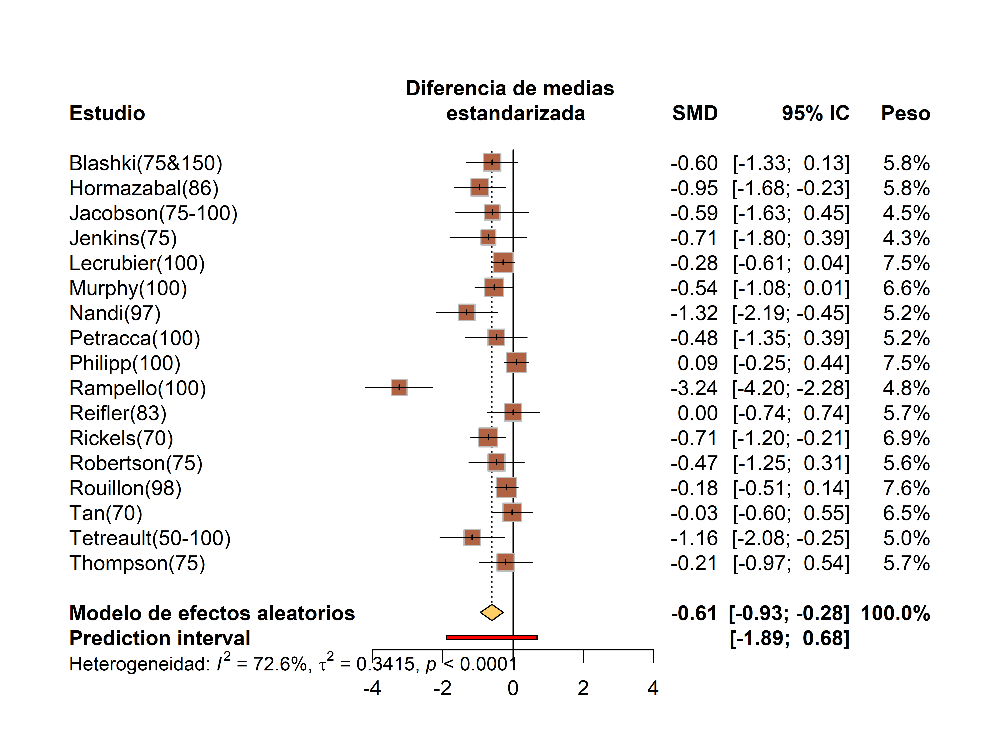
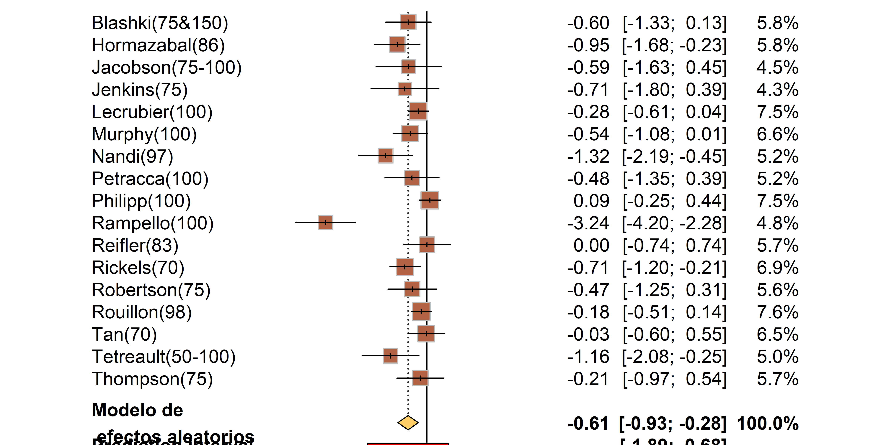
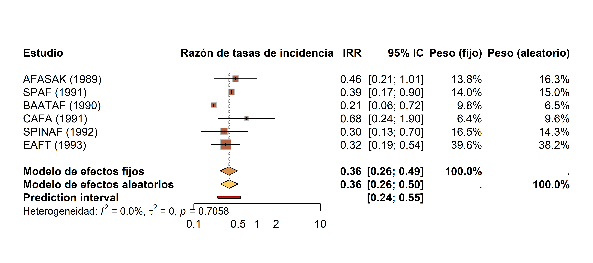

pacman::p_load(
meta,
metadat,
scico,
tidyverse
)Meta-análisis en estudios analíticos
Tamara Ricardo ![]()
Introducción
En esta sección repasaremos los principales estimadores de efecto utilizados en estudios epidemiológicos analíticos, junto con ejemplos prácticos para su ajuste e interpretación en R. Comenzaremos cargando los paquetes necesarios:
Meta-análisis en estudios analíticos
Dentro de los estudios analíticos (observacionales y/o experimentales), los estimadores de efecto más comunes son la diferencia de medias, el odds-ratio (OR), el riesgo relativo (RR) y la razón de tasas de incidencia (IRR). A continuación, mostraremos su implementación en R.
Diferencia de medias
La diferencia de medias entre dos grupos de exposición se define como:
\[ MD = \bar{x_e} - \bar{x_c}\] {#eq-4}
donde:
\(\bar{x_e}\) es la media muestral del grupo expuesto o tratado.
\(\bar{x_c}\) es la media muestral del grupo no expuesto o control.
El cálculo de la diferencia de medias requiere que todas las mediciones se hayan tomado en la misma escala. Para los modelos de meta-análisis, se utiliza la diferencia de medias estandarizada, que elimina la dependencia de las unidades de medición al ponderar por el desvío estándar.
La función metacont() ajusta modelos de meta-análisis para diferencias de medias estandarizadas con el argumento sm = "SMD".
Como ejemplo, utilizaremos la base de datos dat.furukawa2003, que contiene resultados de 17 estudios sobre la efectividad de la dosis de antidepresivos tricíclicos en casos de depresión severa.
# Cargar datos
datos_md <- dat.furukawa2003
# Explorar estructura de los datos
glimpse(datos_md)Rows: 17
Columns: 8
$ author <chr> "Blashki(75&150)", "Hormazabal(86)", "Jacobson(75-100)", "Jenk…
$ Ne <int> 13, 17, 10, 7, 73, 26, 17, 11, 105, 22, 13, 29, 13, 78, 23, 11…
$ Me <dbl> 6.40, 11.00, 17.50, 12.30, 15.70, 8.50, 25.50, 6.20, -8.10, 13…
$ Se <dbl> 5.40, 8.20, 8.80, 9.90, 10.60, 11.00, 24.00, 7.60, 3.90, 2.30,…
$ Nc <int> 18, 16, 6, 7, 73, 28, 10, 10, 46, 19, 15, 39, 13, 71, 23, 11, …
$ Mc <dbl> 11.40, 19.00, 23.00, 20.00, 18.70, 14.50, 53.20, 10.00, -8.50,…
$ Sc <dbl> 9.60, 8.20, 8.80, 10.50, 10.60, 11.00, 11.20, 7.60, 5.20, 1.30…
$ measure <chr> "HRSD-17", "HRSD-21", "HRSD-24", "BDI", "MADRS", "ad hoc physi…Las principales variables de interés son:
Me: media muestral en grupo expuesto/tratamiento.Se: desvío estándar de la media en grupo expuesto/tratamiento.Ne: tamaño muestral en grupo expuesto/tratamiento.Mc: media muestral en grupo no expuesto/control.Sc: desvío estándar de la media en grupo no expuesto/control.Nc: tamaño muestral en grupo no expuesto/control.author: identificador de estudio.
Ajustamos el modelo de meta-análisis para diferencia de medias estandarizada:
- 1
- Tamaño muestral del grupo expuesto en cada estudio.
- 2
- Media del grupo expuesto en cada estudio.
- 3
- Desvío estándar del grupo expuesto en cada estudio.
- 4
- Tamaño muestral del grupo no expuesto o control en cada estudio.
- 5
- Media del grupo no expuesto o control en cada estudio.
- 6
- Desvío estándar del grupo no expuesto o control en cada estudio.
- 7
- Identificador único del estudio.
- 8
- Conjunto de datos.
- 9
-
Estimador de efecto (
"SMD"por defecto, ver ayuda de la función para otras opciones). - 10
-
Calcular intervalos de predicción (
TRUE/FALSEpor defecto).
Analicemos ahora la salida del modelo:
mod_mdNumber of studies: k = 17
Number of observations: o = 902 (o.e = 479, o.c = 423)
SMD 95% CI z p-value
Common effect model -0.3918 [-0.5286; -0.2551] -5.62 < 0.0001
Random effects model -0.6056 [-0.9326; -0.2787] -3.63 0.0003
Prediction interval [-1.8940; 0.6827]
Quantifying heterogeneity (with 95% CIs):
tau^2 = 0.3415 [0.1422; 1.1791]; tau = 0.5844 [0.3771; 1.0859]
I^2 = 72.6% [55.5%; 83.1%]; H = 1.91 [1.50; 2.43]
Test of heterogeneity:
Q d.f. p-value
58.38 16 < 0.0001
Details of meta-analysis methods:
- Inverse variance method
- Restricted maximum-likelihood estimator for tau^2
- Q-Profile method for confidence interval of tau^2 and tau
- Calculation of I^2 based on Q
- Prediction interval based on t-distribution (df = 16)
- Hedges' g (bias corrected standardised mean difference; using exact formulae)El valor de \(I^2\) indica que los datos presentan una heterogeneidad alta y debe descartarse el modelo de efectos fijos.
Los coeficientes del modelo de efectos aleatorios indican que el grupo tratado con antidepresivos tricíclicos presenta una reducción en los síntomas respecto del grupo control \((p<0,001)\). El intervalo de predicción muestra que es posible que estudios futuros encuentren el efecto inverso al estimado.
Generamos el forest plot para visualizar los resultados:
forest(
mod_md,
col.diamond.random = pal[1],
col.square = pal[3],
1 common = FALSE,
2 smlab = "Diferencia de medias \n estandarizada",
3 leftlabs = c("Estudio", rep(c("Total", "Media", "SD"), 2)),
4 rightlabs = c("SMD", "95% IC", "Peso"),
5 hetlab = "Heterogeneidad: ",
6 text.random = "Modelo de \n efectos aleatorios",
)- 1
- Omitir modelo de efectos fijos.
- 2
- Personalizar etiqueta del estimador de efecto.
- 3
- Personalizar etiquetas del panel izquierdo.
- 4
- Personalizar etiquetas del panel derecho.
- 5
- Personalizar etiqueta indicadores de heterogeneidad.
- 6
- Personalizar etiqueta del estimador global.

Para mejorar la visualización, podemos modificar el argumento leftcols para mostrar solamente el identificador de estudio en el panel izquierdo:
forest(
mod_md,
common = FALSE,
col.diamond = pal[1],
col.square = pal[3],
smlab = "Diferencia de medias \n estandarizada",
leftlabs = "Estudio",
rightlabs = c("SMD", "95% IC", "Peso"),
hetlab = "Heterogeneidad: ",
text.random = "Modelo de efectos aleatorios",
leftcols = "studlab"
)
Odds-ratio
El odds ratio (OR) o razón de productos cruzados se define como el cociente entre los odds del evento en el grupo expuesto/tratamiento y en el grupo no expuesto/control:
\[OR = \frac{a/b}{c/d}\] {#eq-5}
donde:
\(a\) es el número de eventos en el grupo expuesto/tratamiento.
\(b\) es el número de individuos sin el evento en el grupo expuesto/tratamiento.
\(c\) es el número de eventos en el grupo no expuesto/control.
\(d\) es el número de individuos sin el evento en el grupo no expuesto/control.
El OR solo puede tomar valores positivos \((0-\infty)\), donde:
\(OR = 1\) indica ausencia de efecto.
\(OR >1\) sugiere un aumento en la probabilidad de ocurrencia del evento en el grupo expuesto.
\(OR < 1\) sugiere un posible efecto protector de la exposición o tratamiento.
Dado que el OR sigue una distribución asimétrica, su análisis estadístico puede ser complejo. Para estabilizar la varianza y aproximar una distribución normal, se aplica una transformación logarítmica.
La función metabin() ajusta modelos de meta-análisis para OR e incorpora automáticamente esta transformación mediante el argumento sm = "OR". Además, incluye una corrección de continuidad para manejar estudios con valores de eventos iguales a cero.
El siguiente ejemplo utiliza la base de datos dat.collins1985b, que contiene información de 9 estudios sobre el efecto de los diuréticos en la prevención de preeclampsia.
Comenzamos cargando los datos y explorando su estructura:
# Carga datos
datos_or <- dat.collins1985b
# Explorar estructura de los datos
glimpse(datos_or)Rows: 9
Columns: 16
$ id <int> 1, 2, 3, 4, 5, 6, 7, 8, 9
$ author <chr> "Weseley & Douglas", "Flowers et al.", "Menzies", "Fallis et a…
$ year <int> 1962, 1962, 1964, 1964, 1964, 1965, 1966, 1971, 1975
$ pre.nti <int> 131, 385, 57, 38, 1011, 1370, 506, 108, 153
$ pre.nci <int> 136, 134, 48, 40, 760, 1336, 524, 103, 102
$ pre.xti <int> 14, 21, 14, 6, 12, 138, 15, 6, 65
$ pre.xci <int> 14, 17, 24, 18, 35, 175, 20, 2, 40
$ oedema <int> 0, 0, 1, 0, 1, 0, 0, 0, 0
$ fup.nti <int> 131, 335, 57, 34, 1011, 1370, 506, 108, 153
$ fup.nci <int> 136, 110, 48, 40, 760, 1336, 524, 103, 102
$ ped.xti <int> 1, 6, 3, 1, 14, 24, 14, 0, 0
$ ped.xci <int> 4, 3, 2, 3, 13, 19, 16, 0, 0
$ stb.xti <int> 1, 3, 1, 0, 6, NA, 6, 0, 0
$ stb.xci <int> 2, 2, 1, 1, 5, NA, 9, 0, 0
$ ned.xti <int> 0, 3, 2, 1, 8, NA, 8, 0, 0
$ ned.xci <int> 2, 1, 1, 2, 8, NA, 7, 0, 0Las variables de interés son:
pre.xti: número de eventos en el grupo expuesto/tratamiento.pre.nti: tamaño muestral en el grupo expuesto/tratamiento.pre.xci: número de eventos en el grupo no expuesto/control.pre.nti: tamaño muestral en el grupo no expuesto/control.author: identificador del estudio.
Ajustamos el modelo de meta-análisis para OR:
- 1
- Eventos en el grupo expuesto en cada estudio.
- 2
- Tamaño muestral del grupo expuesto en cada estudio.
- 3
- Eventos en el grupo no expuesto/control en cada estudio.
- 4
- Tamaño muestral del grupo no expuesto/control en cada estudio.
- 5
- Identificador único del estudio.
- 6
- Conjunto de datos.
- 7
-
Estimador de efecto (
"OR"para Odds-ratio,"RR"para riesgo relativo, ver ayuda de la función para otras opciones). - 8
-
Calcular intervalos de predicción (
TRUE/FALSEpor defecto).
Analicemos ahora la salida del modelo:
mod_orNumber of studies: k = 9
Number of observations: o = 6942 (o.e = 3759, o.c = 3183)
Number of events: e = 636
OR 95% CI z p-value
Common effect model 0.6677 [0.5620; 0.7932] -4.60 < 0.0001
Random effects model 0.5956 [0.3843; 0.9233] -2.32 0.0205
Prediction interval [0.1520; 2.3343]
Quantifying heterogeneity (with 95% CIs):
tau^2 = 0.3008 [0.0723; 2.2027]; tau = 0.5484 [0.2689; 1.4842]
I^2 = 70.7% [41.8%; 85.2%]; H = 1.85 [1.31; 2.60]
Test of heterogeneity:
Q d.f. p-value
27.26 8 0.0006
Details of meta-analysis methods:
- Mantel-Haenszel method (common effect model)
- Inverse variance method (random effects model)
- Restricted maximum-likelihood estimator for tau^2
- Q-Profile method for confidence interval of tau^2 and tau
- Calculation of I^2 based on Q
- Prediction interval based on t-distribution (df = 8)La salida del modelo nos muestra el número de estudios (k), el número de observaciones total (o) y por grupo de exposición (o.e y o.c) y el número de eventos.
El valor de \(I^2\) indica que los datos presentan una heterogeneidad alta y debe descartarse el modelo de efectos fijos.
De acuerdo al coeficiente del modelo de efectos aleatorios, el uso de diuréticos reduce significativamente las probabilidades de preeclampsia en comparación con el grupo control \((p = 0,021)\). Sin embargo, el intervalo de predicción no descarta que futuros estudios encuentren la relación inversa.
Generamos el forest plot para visualizar los resultados:
- 1
- Omitir modelo de efectos fijos.
- 2
- Personalizar etiqueta del estimador de efecto.
- 3
- Mostrar solo el identificador de estudio en el panel izquierdo.
- 4
- Personalizar etiquetas del panel izquierdo.
- 5
- Personalizar etiquetas del panel derecho.
- 6
- Personalizar etiqueta indicadores de heterogeneidad.
- 7
- Personalizar etiqueta del estimador global.

AdvertenciaImportante
La función metabin() también permite estimar el riesgo relativo mediante el argumento sm = "RR", así como otros estimadores de efecto para variables binomiales, como la diferencia de riesgos ("RD"), la efectividad de vacunas ("VE"), entre otros. Dado que su implementación es análoga a la utilizada para la razón de odds ("OR"), no se desarrollarán ejemplos específicos para las mismas.
Razón de tasas de incidencia
La razón de tasas de incidencia (incidence rate ratio o IRR) compara la frecuencia de eventos en dos grupos considerando el tiempo-persona de exposición:
\[IRR = \frac{IR_e}{IR_c}\]
donde:
\(IR_e\) es la tasa de incidencia en el grupo expuesto/tratamiento.
\(IR_c\) es la tasa de incidencia en el grupo no expuesto/control.
Al igual que para la tasa de incidencia, se recomienda realizar la transformación logarítmica de los datos para aproximarlos a una distribución normal.
En meta, la función metainc() ajusta modelos de IRR con sm = "IRR", aplicando automáticamente la transformación logarítmica.
A modo de ejemplo, usaremos nuevamente el dataset dat.hart1999, esta vez comparando entre grupo de exposición y control.
Las principales variables de interés para este caso son:
x1i: casos observados en grupo expuesto/tratamiento.t1i: años-persona en grupo expuesto/tratamiento.x2i: casos observados en grupo no expuesto/control.t2i: años-persona en grupo no expuesto/control.authors: identificador de estudio.
Ajustamos el modelo de meta-análisis para IRR aplicando la transformación logarítmica:
# Cargar datos
datos_inc <- dat.hart1999 |>
# Crear identificador de estudio
mutate(au_anio = paste0(study, " (", year, ")"))
# Ajusta modelo
mod_irr <- metainc(
1 event.e = x1i,
2 time.e = t1i,
3 event.c = x2i,
4 time.c = t2i,
5 studlab = au_anio,
6 data = datos_inc,
7 sm = "IRR",
8 prediction = TRUE
)- 1
- Casos observados en el grupo expuesto de cada estudio.
- 2
- Tiempo-persona en riesgo en el grupo expuesto de cada estudio.
- 3
- Casos observados en el grupo no expuesto/control de cada estudio.
- 4
- Tiempo-persona en riesgo en el grupono expuesto/control de cada estudio.
- 5
- Identificador único del estudio.
- 6
- Conjunto de datos.
- 7
-
Estimador de efecto (
"IRR"para razón de tasas de incidencia, ver ayuda de la función para otras opciones). - 8
-
Calcular intervalos de predicción (
TRUE/FALSEpor defecto).
Analicemos ahora la salida del modelo:
mod_irrNumber of studies: k = 6
Number of events: e = 186
IRR 95% CI z p-value
Common effect model 0.3572 [0.2599; 0.4907] -6.35 < 0.0001
Random effects model 0.3617 [0.2626; 0.4984] -6.22 < 0.0001
Prediction interval [0.2376; 0.5507]
Quantifying heterogeneity (with 95% CIs):
tau^2 = 0 [0.0000; 0.6802]; tau = 0 [0.0000; 0.8247]
I^2 = 0.0% [0.0%; 74.6%]; H = 1.00 [1.00; 1.99]
Test of heterogeneity:
Q d.f. p-value
2.96 5 0.7058
Details of meta-analysis methods:
- Mantel-Haenszel method (common effect model)
- Inverse variance method (random effects model)
- Restricted maximum-likelihood estimator for tau^2
- Q-Profile method for confidence interval of tau^2 and tau
- Calculation of I^2 based on Q
- Prediction interval based on t-distribution (df = 5)El valor de \(I^2\) indica que los datos presentan una heterogeneidad baja y puede conservarse el modelo de efectos fijos.
Los coeficientes del modelo de efectos fijos muestran una disminución estadísticamente significativa del riesgo en el grupo tratado \((p = 0,24)\), pero la misma deja de ser significativa en el de efectos aleatorios \((p = 0,81)\). El intervalo de predicción muestra que futuros estudios pueden detectar un efecto inverso al estimado.
Generamos el forest plot para visualizar los resultados, usando los argumentos col.diamond.random y col.diamond.common para mostrar en diferentes colores los estimadores globales del modelo de efectos fijos y el modelo de efectos aleatorios:
forest(
mod_irr,
1 col.diamond.random = pal[1],
2 col.diamond.common = pal[2],
col.square = pal[3],
3 smlab = "Razón de tasas de incidencia",
4 leftcols = "studlab",
5 leftlabs = "Estudio",
6 rightlabs = c("IRR", "95% IC", "Peso (fijo)", "Peso (aleatorio)"),
7 hetlab = "Heterogeneidad: ",
8 text.random = "Modelo de efectos aleatorios",
9 text.common = "Modelo de efectos fijos"
)- 1
- Color para el símbolo del estimador de efecto global del modelo de efectos aleatorios.
- 2
- Color para el símbolo del estimador de efecto global del modelo de efectos fijos.
- 3
- Personalizar etiqueta del estimador de efecto.
- 4
- Mostrar solo el identificador de estudio en el panel izquierdo.
- 5
- Personalizar etiquetas del panel izquierdo.
- 6
- Personalizar etiquetas del panel derecho.
- 7
- Personalizar etiqueta indicadores de heterogeneidad.
- 8
- Personalizar etiqueta del estimador global para el modelo de efectos aleatorios.
- 9
- Personalizar etiqueta del estimador global para el modelo de efectos fijos.

PrecauciónNota
Debido a la extensión del curso, nos enfocaremos exclusivamente en la implementación en R de los modelos para cada medida de asociación. Quienes deseen profundizar en el desarrollo matemático de estos modelos pueden consultar los capítulos 3 y 4.2 de Harrer et al. (2021).
Actualmente, el paquete
metano incluye funciones específicas para modelar el tiempo hasta el evento (hazard ratio, HR). Sin embargo, si los estudios reportan el log-HR y su error estándar, es posible utilizar la funciónmetagen()con el argumentosm = "HR"para obtener una estimación combinada del efecto. Para una explicación detallada del proceso, pueden consultar el capítulo 2.6.1 de Schwarzer et al. (2015).
Harrer, Mathias, Pim Cuijpers, Toshi A Furukawa, y David D Ebert. 2021. Doing Meta-Analysis With R: A Hands-On Guide. Chapman & Hall/CRC Press. https://www.routledge.com/Doing-Meta-Analysis-with-R-A-Hands-On-Guide/Harrer-Cuijpers-Furukawa-Ebert/p/book/9780367610074.
Schwarzer, Guido, James R. Carpenter, y Gerta Rücker. 2015. Meta-Analysis with R. Editado por R Gentleman, K Hornik, y G Parmigiani. Springer. https://doi.org/10.1007/978-3-319-21416-0_5.